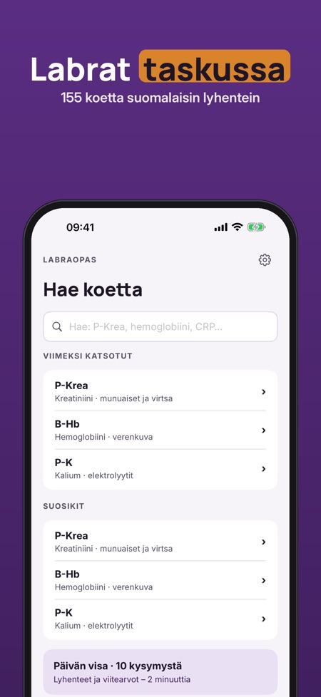

Lab test values & reference. 155 lab tests in your pocket: what each test measures, sample, typical reference range and causes of deviation. For study – not for interpreting your own results.



Labraopas is a Finnish-language study reference for nursing and medical students and nurses: 155 laboratory tests with Finnish abbreviations (P-Krea, B-Hb, fP-Gluk). The app interface is in Finnish.
The full version is a one-time purchase that unlocks all 155 tests, unlimited quizzes with review, unlimited favourites, and the sample tubes and order of draw. No subscription.
Labraopas is an independent study reference. It does not interpret your own results and does not replace a doctor's assessment. Reference ranges vary between laboratories – always check your own laboratory's values. Ranges, samples and tubes are compiled from Fimlab's public test guide and every card shows its source. Not affiliated with any laboratory.